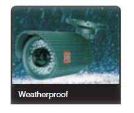
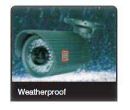
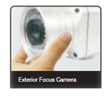
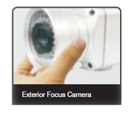

A CCTV System comprises of a DVR (Digital Video Recorder) and one or
more cameras.
This cutting edge system acts like an intelligence unit that reports only to you,
helping you monitor your home or work place throughout the day.The camera
spick up any action in their field of vision, display it on a monitor and feed it into
the DVR, which records and stores it for future references.
With a vast range of cameras, DVRs and accessories the CCTV surveillance
system can be customised to suit your needs.
- It has an independent power supply unit to ensure consistent Power supply to all the devices in case of an electrical
Or UPS failure. - Offers a variety of sophisticated cameras with several features.
- One DVR can be connected to several cameras.
- Can be customised to suit different types of environments.
Thanks to the Ceasefire CCTV System, you will never have to worry about
leaving domestic help alone at home again. Our Dome Cameras provide a
360 degree view, allowing you to keep an eye on every corner of your home.
You can find out if your expensive necklace was misplaced or stolen by
accessing footage recorded by the DVR. With this system, you can leave your
home confident that no one will be able to enter it without your knowledge.
With our CCTV cameras you will never have to worry about what goes on in
your workplace after office hours. If there are sensitive areas that need to be
monitored constantly; our system, equipped with motion detectors , will know
what to look out for. The cameras are cost effective and can be programmed to
begin recording the second the area under surveillance is trespassed or
disturbed in any way.

With our state-of-the-art surveillance system, factory owners can oversee
thousands of people at the same time and ensure that everything runs
smoothly.Our cameras are sophisticated enough to function perfectly even in
less-than-ideal situations. Our Wide Dynamic Range Cameras, for instance,
can automatically adjust their sensors to suit the lighting of the area under
surveillance providing you with clear images even if there is a huge contrast in
lighting, allowing you to keep a vigilant eye on every corner of your factory

CCTV systems are indispensable in retail outlets where one has to monitor a
vast area and hundreds of people at once.
The Ceasefire CCTV System makes it possible to identify shoplifters in large
crowds. Our DVRs allow you to view footage of several cameras at once, and
zoom in to the action if necessary
The system's motion detectors react to any disturbance in the area under surveillance; and the Day and Night cameras provide clear images even at night.

Ceasefire's state-of-the-art CCTV cameras have Charge-Coupled Device (CCD) sensors that offer crystal clear images and
can be mounted on walls or
ceilings. The range of cameras is broadly divided into Bullet Cameras and Dome Cameras.
Integrated cameras and lenses that are sealed to prevent moisture from seeping
in are referred to as Bullet Cameras. Most of these cameras have a large
viewing angle. They are also compact, which makes them perfect for domestic
and commercial properties.

The camera's dome-like shape is what gives it its name. The Dome Camera's unique design makes it difficult to judge where thecamera is pointing without
close inspection. These cameras can be wall-mountedor ceiling- mounted.

The DNR DSP chipset has various powerful functions that give superior high resolution Day & Night images. It removes camera
noise and the Sensor provides quality images at very low luminance levels. The most advanced technology is combined on a
single DSP chipset, resulting in enhanced surveillance images.


WDR is a powerful and ultra-advanced technology
that captures cleaner and superior high resolution
pictures even where images appear dark because
of the presence of strong back light.


This function optimises the signal to noise ratio,
giving improved low light visibility and a powerful
Sens-Up function (up to 256 times magnification).


The combination of a Sony Super HAD CCD image
sensor and DNR DSP provides an excellent
resolution of 560 TV lines.


This function is especially effective for reading
vehicle number plates at night. Users can select
and define the required observation area for the
target object and ignore strong spotlight areas.
Ceasefire's Day and Night Vision cameras have a
CCD chip and built-in high infrared illuminators.
These cameras automatically switch from colour to
monochrome to enhance visibility in the dark.


With incredibly minimum illumination (0.00004
Lux), these CCTVs capture amazing images even
in extremely low light conditions. Noise is also
significantly reduced by the highly advanced DNR
(Digital Noise Reduction) Technology.

DIS function helps capture the highest resolution
pictures even when out of focus due to wind or
change in climate.
These cameras are built with strong durable
material of a die-cast aluminum body and
polycarbonate dome to protect them from external
impacts. They are also shock, dust and explosion Resistant.
 

ILBCT has been developed as a preventive
measure against the damage of IR LED due to an
electric overload. The IR LED's Brightness and
video works normally without data loss, no matter
what conditions it is installed under.


This makes both the setup and the controlling of the camera
easier.It can be activated at the touch of the OSD button.

This function emits a special high frequency signal
that detracts spiders and other insects. This
function is adjustable with the use of a remote
control.

Similar to the zoom in/out function of the zoom camera,
theauto focus lens was developed to use the easy
focusadjustment with the wireless remote control. Along
with focus the OSD control can also be adjusted with one remote control.

The camera's focus can be controlled by using the
exterior focus control ring without opening the
camera's casing. It is completely water resistant
with an IP66 Certification.
 
There is an extra video test port to adjust to the
best performance during installation. The
brightness level of these IR lights can be easily
controlled by using the IR control volume button for
the user's umpteen number of environments.

The built in PIR sensor activates the white LED
when an intruder forcibly enters as a warning
signal. The colour picture can be used to verify the
face and features of the subject.


This camera offers a 180 limitless observation
angle. With this panoramic view, the blind spot is
completely negligible.


The multi axis bracket was initially designed similar to a
gear system for easy installation of the camera. The
camera can be easily installed in any place or position.

DVRs are at the heart of the Ceasefire CCTV System. These recorders receive images from the CCTV camera, digitize them
and store them electronically.The most common media for storage are hard disk drives like those used in personal computers.
Ceasefire's DVRs are available in three variants: 4 Channel, 8 Channel and 16 Channel. Ceasefire 4 Channel DVR is suitable
for smaller shops / factories / office environment. It can hold up to 4 cameras and perform the basic functions of recording high
resolution images.
The 8 and 16 Channel variants are part of the HD Range. These DVRs can store High-Definition images from up to 16 CCTVs.
They are best suited for larger or more sensitive organizations such as dark warehouses, jewellery or white goods stores and high-security government areas.
 Features
FeaturesH.264 DVR 4, 8 and 16 Channel & Eco-Range
- Pre-alarm recording
- Different speed/resolution setting by channel
- H.264 Compression
- Watermarking & watermarking detection
- Bi-directional audio communication (Two way audio
- Auto e-mailing notification
- Covert channel / Audio detection / Smart search
- Multi-time/day search & playback
- Event only search & playback
- Still image capture
- Data backup to NAS over ethernet
- PDA viewer (Windows mobile)
- Mobile web viewer (3G viewer)
- NTP, DST / DDNS, DHCP
- Hexaplex (Live, Recording, Playback, Network,
Backup, Setup) operation - Ceasefire's 4 Ch, 8 Ch & 16Ch DVRs are supplied
with a hard disk of 1 TB(terabyte) capacity - *Eco-range is supplied with a hard disk of 512 MB
Capacity - *4 GB USB dongle free
- *Compact size with full features
- *4ch mux(not quad)
- *Live/playback digital zoom (x2, x4)
- *Pattern change detection
DVR Features

Ceasefire DVRs are on guard 24 x 7 providing the following facilities to users
(1)Live (2) Recording (3) Playback (4) Network (5) Backup (6) Setup.
Ceasefire DVRs support the best in class video compression mode which is H.264. Thus the images so recorded are of
highest standard.

This is a revolutionary feature which is supported by Ceasefire DVRs thereby enhancing this reach and thus adding to their
versatility.
Ceasefire DVRs (except the Eco-range) have the CD R/W thereby enabling the user to backup the recordings for future
reference.

Ceasefire DVRs are fully internet compatible, thus enabling users to log in from anywhere in the world and monitor the premise. Their state-of-the-art software is customized to enable total control from remote Locations.

Ceasefire DVRs are very versatile, they provide you mobile viewing facility, thus, you stay connected to your premises while
on the move.
Ceasefire DVRs supports the output from the DVR to be backed up using a printable output thereby increasing its versatility.
Ceasefire DVRs support bi-directional audio communication (two ways audio) which is an added feature in our range of DVRs